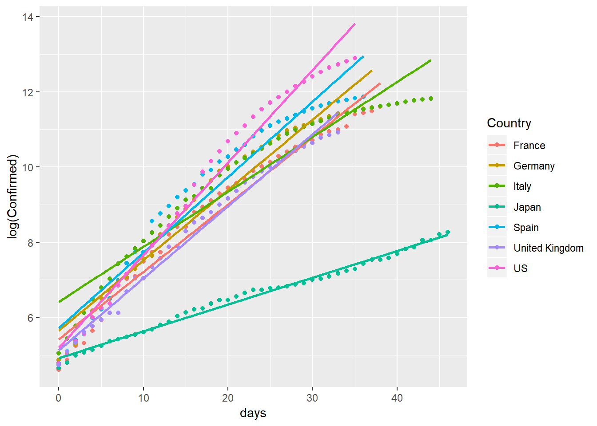

感染上位国の感染者数増加率
感染者数の増加を、イタリア、スペイン、アメリカ、フランス、イギリス、イギリス（感染者数上位国） と日本とを比較する。
モデルは次の通りである。感染者数 \(y_t\) を日付 \(t\) に対する増加関数と考える。すなわち、時間増分\(dt\)当たりの感染者数の増分は\(dy_t\)であり、ここで感染者数の増加率を\(dy_t/dt \over y_t\)と表す。感染者数の増加率を一定\(b\)と仮定すれば、次の式で表すことができる。 \[ {dy_t/dt \over y_t} =b \] ただし、\(b>0\)である。 以上は \[ {dy_t \over y_t} =bdt \] を満たすため、両辺を積分すれば次が得られる。 \[ \int {dy_t \over y_t} =\int bdt+C \] ただし、\(C\)は不定積分の定数である、\(t,y_t\)の積分範囲は、\(0<t \leq T\)に対して \(y_0 < y_t \leq y_T\) であることに従って定積分すると、以上は次のように求められる： \[ \log y_T -\log y_0 =bT \] すなわち、特定時刻\(T\)について\(y_T\)を次のように表現できる。 \[ y_T=y_0 \exp(bT) \] 時間の経過で増加する感染者数の初期値を\(y_0\)に対して、\(T\)時間が経過後の感染者数が\(y_T\)である。この式を当てはめることが許されれば、 \(\log y_T=\log y_0+bt\) と変換できる。この\(b\)は増加率を表し、\(\log y_T\)と\(T\) との間に直線関係が見られれば、およそ増加率は一定と考えてよい。
時間経過と感染者数の対数値
ジョンズホプキンス大学のデータを用いて描いた図が次である。ここでは感染者数が100人を超えた時点を\(t=0\)、その値を\(y_0\)とする。
rm(list=ls())
library(tidyverse)
url_csv <- 'https://raw.githubusercontent.com/datasets/covid-19/master/data/time-series-19-covid-combined.csv'
c19 <- read_csv(url(url_csv))
c19a<-filter(c19,`Country/Region` %in%
c("Italy","US","Spain","Germany","Japan","France","United Kingdom") & is.na(`Province/State`))
select(c19a,-c(3:5))->c19a
rename(c19a,Country=`Country/Region`)->c19a
filter(c19a,Confirmed>99)->c19b
c19b%>%group_by(Country)%>%mutate(days=Date-min(Date))->c19b
summary(lm(data=c19b,log(Confirmed)~days+Country))##
## Call:
## lm(formula = log(Confirmed) ~ days + Country, data = c19b)
##
## Residuals:
## Min 1Q Median 3Q Max
## -1.9451 -0.4735 0.1888 0.5032 1.7715
##
## Coefficients:
## Estimate Std. Error t value Pr(>|t|)
## (Intercept) 5.773231 0.146700 39.354 < 2e-16 ***
## days 0.161157 0.004152 38.816 < 2e-16 ***
## CountryGermany 0.370520 0.177958 2.082 0.038311 *
## CountryItaly 0.344708 0.171078 2.015 0.044939 *
## CountryJapan -2.876630 0.169711 -16.950 < 2e-16 ***
## CountrySpain 0.669891 0.179242 3.737 0.000228 ***
## CountryUnited Kingdom -0.144168 0.183623 -0.785 0.433088
## CountryUS 0.894642 0.180611 4.953 1.31e-06 ***
## ---
## Signif. codes: 0 '***' 0.001 '**' 0.01 '*' 0.05 '.' 0.1 ' ' 1
##
## Residual standard error: 0.7705 on 261 degrees of freedom
## Multiple R-squared: 0.8845, Adjusted R-squared: 0.8815
## F-statistic: 285.7 on 7 and 261 DF, p-value: < 2.2e-16ggplot(data=c19b,aes(x=days,y=log(Confirmed),col=Country))+geom_point()+geom_smooth(method=lm,se=F)
イタリア、スペイン、アメリカ、フランス、イギリス、イギリス